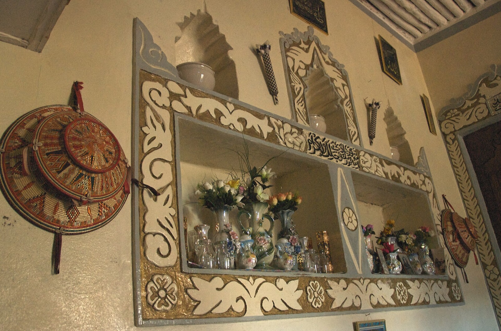
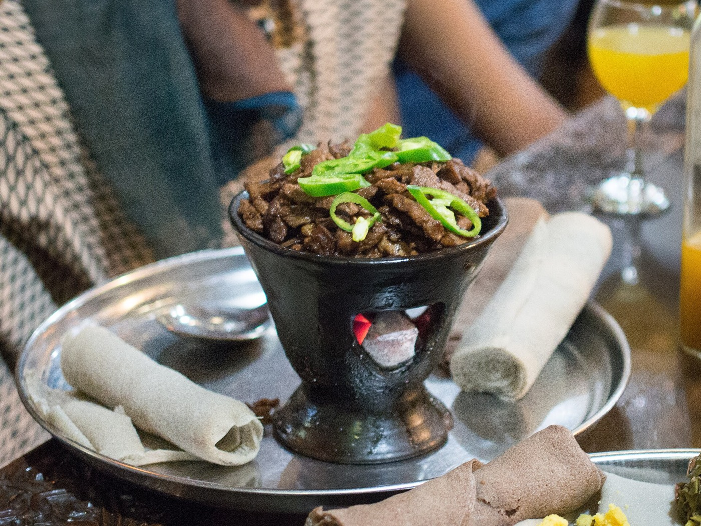
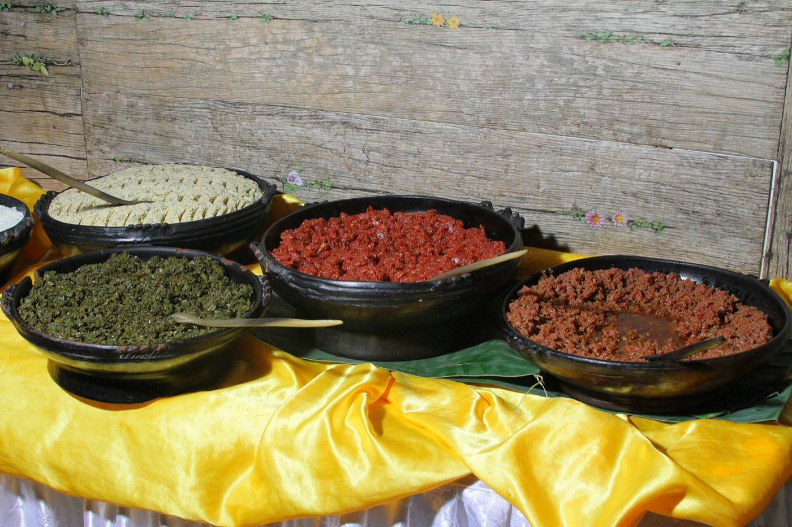
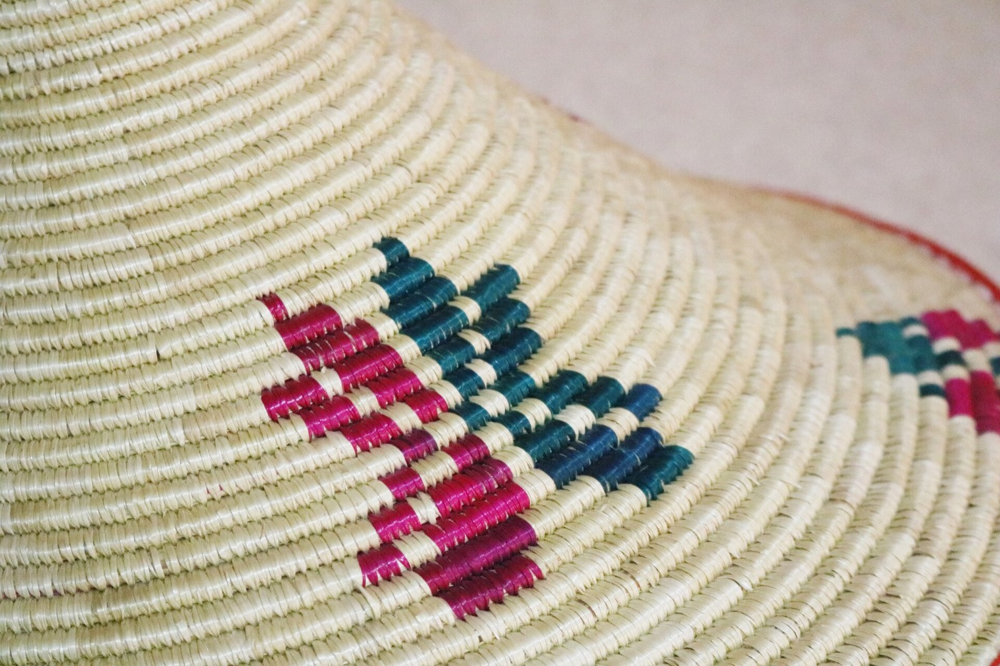

Ethiopian Kitchen · Dine In · Catering
ሰላም ቪሌጅ Selam Village
More than 35 years of fresh tire siga, sizzling tibs, handmade injera and the warmth of an Ethiopian home, served in our big, green garden. Gather around the mesob, you are family here.
Welcome
Everything Selam Village, one step away

MenuTire siga, kitfo, ox & goat tibs, dulet, vegetarian dishes and a full bar.→ Garden & EventsDine under the trees in our big garden, or host your event with us.→
Garden & EventsDine under the trees in our big garden, or host your event with us.→

CateringWeddings, holidays and company events, plus meat supply for hotels and supermarkets.→ RoomsGuest rooms beside our restaurant and garden. Book a night or a week.→
RoomsGuest rooms beside our restaurant and garden. Book a night or a week.→

Our StoryMore than 35 years of Ethiopian hospitality since 1988.→